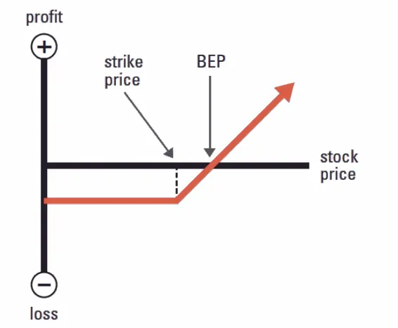

Correctly Reading the Strategy P&L Charts

Options Payoff or Profit and Loss (P&L) diagrams help us to understand where our options strategies will win or lose money at expiration based on different stock price points. They are incredibly useful aids to our discussion of options trading and, once you understand how they work, they can help you build out more complex options strategies and analyze possible trade adjustments. The horizontal axis indicates the market price of the underlying asset which changes along with market conditions, whereas the vertical axis represents the option payoff and the overall profit. The strikethrough horizontal line represents the strike price. BEP stands for the Break Even Price. The break-even price is the price in the underlying asset at which investors can choose to exercise or dispose of the contract without incurring a loss.